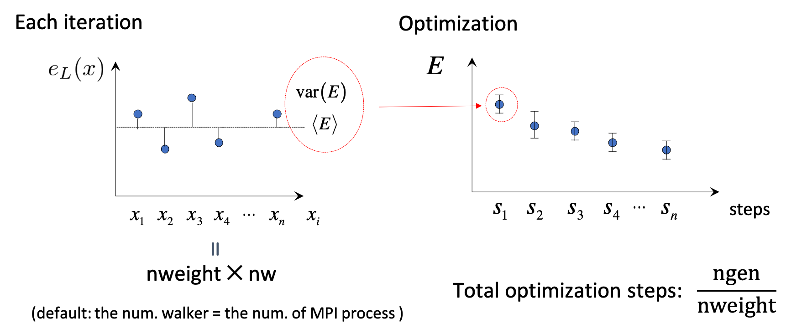

Quantum Monte Carlo calculations
We describe input files that control variational and diffusion Monte Carlo simulations. TurboRVB input files are built using fortran namelists. Keywords are divided in different sections according to their meaning.
Quantum Monte Carlo kernel (turborvb.x)
turborvb.x is a binary to run QMC jobs. The input parameters are briefly explained as follows. See Reference section for the full description of the parameters.
Simulation section
This section contains general informations necessary to specify the type of run to be carried out. In this section it is specified whether we want to perform a wave function optimization or production run and using which method (like Variational Monte Carlo (VMC) or Lattice Regularized DMC (LRDMC).
itestr4— Selects the method: VMC2; VMCopt with Hessian/SR variants-4,-5,-8,-9(subset of parameters vs all parameters); LRDMC-6; LRDMCopt-24–-29(derivatives via LRDMC analogously).iopt—1fresh start;0continue;2/3restart optimization fromfort.10with optional reuse of equilibrated configs / MO projection (see manual formoloptcoupling).ngen— Number of MC generations / samples; for optimization must matchnweightconstraints in &optimization.nscra— Rebuild the determinant from scratch everynscraaccepted moves to control accumulated update error.nbra— VMC: Metropolis steps between energy samples; LRDMC: enables newer branching scheme when> 0(load balancing—should be large enough vs electron count).nw— Number of walkers (default ≈ MPI ranks; must be a multiple of ranks if set).disk_io—default/nocont/mpiio: trade scratch files per rank vs continuation and single-file I/O.kSq,kappar— Ewald precision and screening; defaults differ for molecules vs crystals.iseedr— Random seed.freqcheck— How often to check error flags.Memory / GPU / ScaLAPACK / developer —
membig,membigcpu,min_block,max_target*,yesfast,ip_reshuff,nproc_diag,developer(several slated to move to a/developer/namelist per the manual).yes_sparse*,max_sparse_choice— Sparse-matrix path selection (defaults differ DFT vs QMC).dielectric_*— Experimental dielectric model flags (dielectric.f90; “not tested” in manual).novec_loop1— Vectorization toggle forupnewwf.
Pseudo section
This block configures nonlocal pseudopotential quadrature: point counts, scaling if the code demands more points, and optional random (Fahy-style) integration mesh for QMC.
nintpsa— Integer grid sizes for the pseudo (comma-separated defaults by context in the table).npsamax— Multiplies the number of integration points; increase if the run stops with “Increase npsamax”.pseudorandom— Random integration mesh for the pseudo (default.true.for QMC,.false.for DFT in the table).
VMC section
This namelist applies to VMC and VMCopt. It controls Metropolis / trial moves (effective time step tstep, hopping fraction), numerical regularization of determinants and ratios (epscut, epscuttype, epstlrat, theta_reg, epsvar), and automatic tuning of epscut / tstep.
tstep— VMC move size (can be adapted automatically).hopfraction— Fraction of hopping moves in the hybrid MCMC (seehoppingin source).epscut— Regularization threshold for the determinant;0for Jastrow-only optimization without regularization;> 0enables finite-variance forces and energy derivatives (type 2 regularization).epscuttype— Regularization flavor (0 vs 2; others deprecated).epstlrat— Setsepstlused inratio_psiprecision control.change_epscut,change_tstep— Auto-adjust regularization and time step (defaults differ VMC vs other modes).epsvar,theta_reg— Precision / stabilization inratiovar.f90(see cited J. Chem. Phys. 2020).alat2v,shift— Marked unused / unidentified in the manual.
DMCLRDMC section
This namelist applies to LRDMC and LRDMCopt. It sets the lattice regularization (alat, alat2, double-grid controls), trial energy (etry), localization / fixed-node knobs (npow, tstepfn, Klrdmc, gamma, plat), branching (tbra, nbra coupling, optbra, rejweight, cutreg, nw_max), spin / regularization variants (typereg, novar, epscutdmc, epstldmc), Pathak–Wagner and Moroni/Umrigar style options (true_wagner, cutweight, nbra_cyrus, weight_moroni), and several flags left as “unclear” in the manual (better_dmc, safelrdmc, lrdmc_der, etc.—inspect source when needed).
etry— Trial total energy (use prior DFT or VMC estimate).typereg— How spin-flip is treated (e.g.6= determinant-only term).npow— Interpolates fixed-node (0) vs local effective Hamiltonian (1); default recommended.tbra— Time between branchings; omit whennbra > 0in &simulation (new branching path).alat— Lattice spacing \(a\) of the finest regularization grid (default \(\sim 1/Z_{\max}\)); negative selects single-grid LRDMC for detailed balance.alat2— Double-grid ratio \(a'/a\) (valence vs core regions);0= single grid; negativealat⇒ do not setalat2.plat,zmin,l0_kousuke,iesrandoma— Double-grid weighting and diffusion randomization (see cited PRB 2020 forl0_kousuke).tstepfn—0→ fixed-node;1→ LRDMC reduces to VMC-like behavior.Klrdmc— \(\eta = 1 + K a^2\) parameter in LRDMC.parcutg— Energy cutoff regularization (1recommended;0unbounded energy—now said to work).rejweight— Reject vs rescale walker weights after diffusion (context-dependent best choice).cutreg— Local-energy cutoff (Ry) in DMC.enforce_detailb— Force detailed balance.nw_max— Cap on walker count.
Readio section
This block controls special read modes for analysis (e.g. correlated sampling or correlation functions with readforward).
iread— Setiread = 3for correlated sampling / readforward workflows described in the manual.
Optimization section
This namelist is for VMCopt and LRDMCopt. It configures the stochastic reconfiguration / linear method (solver choice kl, conjugate-gradient acceleration ncg, signal/noise cuts parcutmin, npbra, parcutpar), step sizes (tpar, parr, epsi), binning of samples (nweight, nbinr, iboot), exponent bounds for Jastrow/AGP (minzj/maxzj, minz/maxz), optional fixed MO count (molopt), path-integral / quantum nuclei (yesquantum, nbead), ion dynamics during optimization (idyn, tion, nmore_force), signal-to-noise optimization (signalnoise), and AGP symmetrization (symmetrizeagp).
{kind=link}

kl— Linear-system solver for SR (-7required forsignalnoise=.true.;-6alternative for small systems / many samples).ncg— CG acceleration of the linear method (only withitestr4 = -4, -8);> 1uses multiple on-the-fly gradients.parcutmin,npbra,parcutpar— Filter gradients by signal/noise whenncg > 0ornpbra > 0.tpar— Optimization step scale (linear method:< 1for stability; pure SR: tune by hand).parr— Accuracy/stability knob for SR matrix inversion (tighten toward ~0.001 for accurate optimizations).nweight,nbinr,iboot— Samples per iteration, bins for error bars, and warm-up steps inside a bin.epsi— Cap on relative wavefunction changes \(\Delta\psi/|\psi|\).minzj/maxzj,minz/maxz— Allowed exponent ranges for Jastrow / AGP bases.molopt—-1= optimize with fixed number of molecular orbitals (requiresnmolmaxin &molecul).yesquantum,nbead— Quantum nuclei via path integral (more beads ⇒ smaller Trotter error).idyn,tion,nmore_force— Ion dynamics coupled to optimization (integrator type, timestep, extra samples on last step).signalnoise— Optimize along maximum signal/noise direction (all parameters, optionally withieskin).onebodysz— Optimize only the one-body spin Jastrow part.symmetrizeagp— Re-symmetrize AGP each iteration (default.true.).
Parameters section
This section should be specified for a VMCopt or LRDMCopt run.
Only ieskin should be specified for a VMC or LRDMC run if one wants to compute atomic forces.
This section describes switches for optimizing wavefunction parameters, the ouput printout and on the measures performed during the MC run. For example, value=0 means do not optimize this type, vice versa (iesd=0 means that one body and two body Jastrow factors will not be optimized).
This namelist (¶meters) turns which parts of the wavefunction and cell enter an optimization or measurement run. ies* = 0 typically freezes that block; 1 enables optimization. For plain VMC/LRDMC (no opt), mainly ieskin matters if you need forces; optional cell dynamics use typedyncell, pressfixed, fixa/fixb/fixc.
iesd— Optimize 1- and 2-body Jastrow.iesinv— Optimize spin Jastrow matrix (< 0⇒ range via &fitparrmaxinv).iesfree— Optimize density Jastrow (< 0⇒rmaxj).iessw— Optimize AGP matrix on localized basis (< 0⇒rmax).iesm— Optimize Jastrow basis exponents and/or contracted coefficients (interaction withitestr4andyeszj).iesup— Same idea for determinantal part (yeszagp).ieser—1= print/measure total energy (no optimization implied).iesfix—1= print energy variance.ieskin—> 0= compute nuclear forces (and dynamics whenidyn > 0).yeszj,yeszagp— Force exponent optimization even in Hessian subset modes wheniesm/iessware on.real_agp,real_contracted— For complex WFs, optimize only real parts of AGP or contracted coefficients.typedyncell— Cell dynamics: NVT, optimize shape at fixed volume, NPT-like variants (see manual for modes 0–3).pressfixed— Target pressure (a.u.) for constant-pressure modes (classical PV term not included).fixa,fixb,fixc— Freeze individual lattice lengths during dynamics.
Fitpar section
This section describes the details of the locality approximations for reducing the number of parameters.
When iessw, iesfree, or iesinv are negative, this namelist defines spatial cutoffs so only short-range matrix elements are optimized—reducing the effective parameter count (locality approximation).
rmax— Ifiessw < 0: do not optimize AGP elements for interatomic distances beyondrmax(0⇒ no interatomic AGP links optimized).rmaxj— Ifiesfree < 0: same for density Jastrow (0⇒ effectively 3-body Jastrow only).rmaxinv— Ifiesinv < 0: same for spin Jastrow.
Dynamics section
This namelist refines thermostats / friction / convergence criteria for ion dynamics used together with &optimization (idyn > 0): temperature, damping, when to accept ion moves after WF optimization, and optional bias corrections.
temp— Temperature (a.u.; negativeabs(temp)= Kelvin);0⇒ structural (zero-T) optimization.friction— Damping (needed for some Newton-style integrators; can be 0 foridyn=5per manual).iskipdyn,maxdev_dyn— Periodically checkdev_matvsmaxdev_dynafteriskipdyn * nweightsteps (maxdev_dynnoted deprecated).delta0— Scales covariance vs approximate Hessian foridyn=5; for otheridynacts as correlation-time tuning (defaults try to pick a safe value).addrognoso— Foridyn=5, remove canonical bias astion → 0.normcorr— Noise correction on forces (often leave at 0 in practice per manual).
How to get energy and forces after a VMC or LRDMC run (forcevmc.sh, forcefn.sh)
After a VMC calculation has finished, you can get the total energy (i.e., summation of the local energy), i.e.,
by forcevmc.sh script:
forcevmc.sh 10 5 1
wherein 10, 5, and 1 are bin length, the number of the discarded bins (i.e., the number of warm-up steps 4), and the ratio of Pulay force (1 is ok), respectively. A reblocked total energy and its variance is written in pip0.d.
#cat pip0.d
number of bins read = 1496
Energy = -1.1379192772188327 1.7589095174214898E-004
Variance square = 1.7369139136828382E-003 2.7618833870090571E-005
Est. energy error bar = 1.7510470092362484E-004 3.9800256121536918E-006
Est. corr. time = 2.6420266523220208 0.10738159557488412
If you want to calculate forces, put ieskin=1 in the ¶meters section.
you may get forcevmc.dat file.
#cat forces_vmc.dat
Force component 1
Force = 6.004763869201490E-003 4.997922374161991E-005
6.273565633363322E-007
Der Eloc = 6.927675852724724E-003 4.999242839793062E-005
<OH> = 0.557134685159244 7.437283601136703E-005
<O><H> = -0.557596141151006 7.447559481785158E-005
2*(<OH> - <O><H>) = -9.229119835232336E-004 2.922997214772288E-006
Force component 2
Force = -6.004763869201487E-003 4.997922374182328E-005
6.273565633389692E-007
Der Eloc = -6.927675852724721E-003 4.999242839840503E-005
<OH> = -0.557134685159244 7.437283601136703E-005
<O><H> = 0.557596141151006 7.447559481785158E-005
2*(<OH> - <O><H>) = 9.229119835232336E-004 2.922997214772288E-006
Force component 3
Force = 1.200952773851219E-002 9.995844747822329E-005
1.254713126751116E-006
Der Eloc = 1.385535170544853E-002 9.998485679843661E-005
<OH> = 1.11426937031852 1.487456727691242E-004
<O><H> = -1.11519228230199 1.489511903810635E-004
2*(<OH> - <O><H>) = -1.845823966936333E-003 5.845994429761913E-006
where Force are total forces, Der Eloc are Hellman-Feyman contributions, and 2*(<OH> - <O><H>) are Pulay contributions. In detail,
where \(J\) is the Jacobian of the warp transformation if it is employed:
Indeed,
Der Eloccorresponds to \(- \braket{\cfrac{d}{d{\bf R}_{\alpha}}E_L}\), and
2*(<OH> - <O><H>)corresponds to \(2 \left(\braket{E_L} \cdot \braket{\cfrac{d}{d{\bf R}_{\alpha}} \log (J^{1/2} \Psi)} \braket{E_L \cdot \cfrac{d}{d{\bf R}_{\alpha}} \log (J^{1/2} \Psi)} \right)\).
Note that the obtained force is the sum of force components when you specify the symmetry, i.e.,
Force = \(F_{1,x} + F_{2,z}\) for:
# Constraints for forces: ion - coordinate
2 1 1 2 3
By the way, local energies, it derivatives, ... etc are saved in fort.12.
This is a binary file. So, if you want to see it, please use the following python code:
from scipy.io import FortranFile
import numpy as np
# check length of fort.12
f = FortranFile('fort.12', 'r')
a = f.read_reals(dtype='float64')
column_length = len(a)
f.close()
# start reading fort.12
head = ("head", "<i")
tail = ("tail", "<i")
dt = np.dtype([head, ("a", "<{}d".format(column_length)), tail])
fd = open('fort.12', "r")
fort12 = np.fromfile(fd, dtype=dt, count=-1)
data_length=len(fort12)
fd.close()
# end reading fort.12
print(fort12)
# for ngen=10
>>> fort12
array([(40, [ 1. , 1. , -11.23924971, -11.23924971, 126.32073395], 40),
(40, [ 1. , 1. , -11.4465321 , -11.4465321 , 131.02309712], 40),
(40, [ 1. , 1. , -11.25058355, -11.25058355, 126.57563015], 40),
(40, [ 1. , 1. , -11.88021352, -11.88021352, 141.13947319], 40),
(40, [ 1. , 1. , -10.89686295, -10.89686295, 118.74162225], 40),
(40, [ 1. , 1. , -11.8906161 , -11.8906161 , 141.38675112], 40),
(40, [ 1. , 1. , -10.50040878, -10.50040878, 110.25858451], 40),
(40, [ 1. , 1. , -10.85804034, -10.85804034, 117.89704005], 40),
(40, [ 1. , 1. , -11.3042634 , -11.3042634 , 127.78637111], 40),
(40, [ 1. , 1. , -10.86745849, -10.86745849, 118.10165397], 40)],
dtype=[('head', '<i4'), ('a', '<f8', (5,)), ('tail', '<i4')])
# for ngen=10, ieskin=1 (force)
>>> print(fort12)
[(64, [ 1.00000000e+00, 1.00000000e+00, -1.11415166e+01, -1.11415166e+01, -6.76788096e-02, -3.24756797e-01, 7.54044578e-01, 1.24133391e+02], 64)
(64, [ 1.00000000e+00, 1.00000000e+00, -1.03517873e+01, -1.03517873e+01, -6.11591170e-01, -1.58829951e-01, 6.33106171e+00, 1.07159501e+02], 64)
(64, [ 1.00000000e+00, 1.00000000e+00, -1.10816574e+01, -1.10816574e+01, -9.54555883e-02, -1.03302282e-01, 1.05780612e+00, 1.22803130e+02], 64)
(64, [ 1.00000000e+00, 1.00000000e+00, -1.10699873e+01, -1.10699873e+01, -4.56617640e-01, -5.06874793e-02, 5.05475147e+00, 1.22544618e+02], 64)
(64, [ 1.00000000e+00, 1.00000000e+00, -1.11472251e+01, -1.11472251e+01, -2.66696199e-01, -6.23362748e-02, 2.97292255e+00, 1.24260627e+02], 64)
(64, [ 1.00000000e+00, 1.00000000e+00, -1.12157075e+01, -1.12157075e+01, 1.11745432e-01, -4.24133841e-02, -1.25330408e+00, 1.25792096e+02], 64)
(64, [ 1.00000000e+00, 1.00000000e+00, -1.21590572e+01, -1.21590572e+01, 7.54759031e-02, -1.60694240e-01, -9.17715821e-01, 1.47842672e+02], 64)
(64, [ 1.00000000e+00, 1.00000000e+00, -1.06346744e+01, -1.06346744e+01, 1.97122176e-03, -8.72304548e-01, -2.09633016e-02, 1.13096300e+02], 64)
(64, [ 1.00000000e+00, 1.00000000e+00, -1.09934275e+01, -1.09934275e+01, 4.44874974e-01, 5.13646778e-01, -4.89070079e+00, 1.20855449e+02], 64)
(64, [ 1.00000000e+00, 1.00000000e+00, -1.10323163e+01, -1.10323163e+01, -8.96736584e-02, 3.65895834e-02, 9.89308167e-01, 1.21712004e+02], 64)]
It is a similar procedure in a LRDMC calculation. After a LRDMC calculation has finished, you can get the total energy by forcefn.sh script:
forcefn.sh 10 3 5 1
wherein 10, 3, 5, and 1 are bin length, correcting factor (i.e., \(p\) in the above expression), the number of the discarded bins (i.e., the number of warm-up steps is 4), and the ratio of Pulay force (1 is ok), respectively. A reblocked total energy and its variance is written in pip0_fn.d.
% cat pip0_fn.d
number of bins read = 1201
Energy = -11.0854289356563 1.239503202184784E-004
Variance square = 0.126708380716482 1.148750765092961E-003
Est. energy error bar = 1.234807072779590E-004 2.503947626011507E-006
Est. corr. time = 1.85075908836029 7.596952532743223E-002
Energy (ave) = -11.0854159959592 1.144905833254917E-004
In detail, local energies, it derivatives, ... etc are saved in fort.12.
This is a binary file. So, if you want to see it, please use the following python code:
from scipy.io import FortranFile
import numpy as np
# check length of fort.12
f = FortranFile('fort.12', 'r')
a = f.read_reals(dtype='float64')
column_length = len(a)
f.close()
# start reading fort.12
head = ("head", "<i")
tail = ("tail", "<i")
dt = np.dtype([head, ("a", "<{}d".format(column_length)), tail])
fd = open('fort.12', "r")
fort12 = np.fromfile(fd, dtype=dt, count=-1)
data_length=len(fort12)
fd.close()
# end reading fort.12
print(fort12)
# for ngen=10
[(88, [ 9.86170773e-01, 4.99135464e-02, 9.86170773e-01, -1.10385005e+01, -1.10168388e+01, 1.15291960e+01, 8.81420567e-01, 6.98486471e-01, 2.36894962e+01, 2.43879827e+01, 1.21370738e+02], 88)
(88, [ 9.98338830e-01, 4.99721051e-02, 9.98338830e-01, -1.10927678e+01, -1.09222941e+01, 1.19273579e+01, 8.78528014e-01, 3.38981825e+00, 2.41699956e+01, 2.75598139e+01, 1.19296508e+02], 88)
(88, [ 1.00471589e+00, 4.99333686e-02, 1.00471589e+00, -1.10613899e+01, -1.12830842e+01, 1.13634444e+01, 8.85749131e-01, 1.00489789e+00, 1.45340719e+01, 1.55389698e+01, 1.27307988e+02], 88)
(88, [ 1.01299329e+00, 5.05361181e-02, 1.01299329e+00, -1.11285545e+01, -1.09451392e+01, 7.04597311e+00, 9.31592950e-01, 7.90368785e-01, 1.20981738e+01, 1.28885425e+01, 1.19796072e+02], 88)
(88, [ 1.00768515e+00, 5.01575002e-02, 1.00768515e+00, -1.10766102e+01, -1.10519487e+01, 6.23060416e+00, 9.38800823e-01, 3.91804603e-01, 1.15920122e+01, 1.19838168e+01, 1.22145570e+02], 88)
(88, [ 1.00453664e+00, 5.01341628e-02, 1.00453664e+00, -1.10452450e+01, -1.11455370e+01, 6.20564485e+00, 9.37336722e-01, 1.41905072e-01, 1.17873053e+01, 1.19292104e+01, 1.24222994e+02], 88)
(88, [ 1.00089023e+00, 5.01634269e-02, 1.00089023e+00, -1.10088733e+01, -1.08850832e+01, 7.46071511e+00, 9.24659908e-01, 8.62370954e-01, 1.72063107e+01, 1.80686817e+01, 1.18485037e+02], 88)
(88, [ 9.75216423e-01, 4.94485892e-02, 9.75216423e-01, -1.07494006e+01, -1.07035718e+01, 1.08297761e+01, 8.93990117e-01, 1.53318195e+00, 2.25737265e+01, 2.41069084e+01, 1.14566449e+02], 88)
(88, [ 1.00020845e+00, 5.00654152e-02, 1.00020845e+00, -1.10020818e+01, -1.09391772e+01, 9.92690439e+00, 8.99350239e-01, 2.44630615e-01, 1.76602181e+01, 1.79048487e+01, 1.19665598e+02], 88)
(88, [ 9.98680471e-01, 4.99068560e-02, 9.98680471e-01, -1.09867801e+01, -1.11478923e+01, 1.14530815e+01, 9.02006051e-01, 5.49970529e+00, 1.87028590e+01, 2.42025643e+01, 1.24275504e+02], 88)]
When you do LRDMC calculations with several \(a\), extrapolation \(a \rightarrow 0\) by funvsa.x
# See. Readme of funvsa.x in detail.
# 2=(up to a^4) number of data 4 1
2 5 4 1
0.10 -11.0850188375511 1.250592379643920E-004
0.20 -11.0854289356563 1.239503202184784E-004
0.30 -11.0855955871707 1.334024389855123E-004
0.40 -11.0860656088368 1.279739901272860E-004
0.50 -11.0868942724581 1.340429878094154E-004
% cat evsa.out
Reduced chi^2 = 3.24139195024559
Coefficient found
1 -11.0529822174764 1.886835280808058E-004 <- E_0
2 -3.752828455181791E-003 3.868657694133935E-003 <- k_1
3 -2.343738962778753E-002 1.487080872118977E-002 <- k_2
Extrapolation of LRDMC energies with respect to the lattice space (funvsa.x)
Please collect all LRDMC energies into evsa.in
2 4 4 1
0.10 -1.13810148463746 1.081107885639917E-004
0.20 -1.13799520203238 9.985034545291718E-005
0.40 -1.13811591303364 1.092139729594029E-004
0.60 -1.13785055959330 1.244613258193110E-004
wherein
# See. Readme of funvsa.x in detail.
# 2 number of data 4 1
2 4 4 1
for a quadratic fitting i.e., \(E(a)=E(0) + k_{1} \cdots a^2 + k_{2} \cdots a^4\) and
# alat LRDMC energy Its error bar
0.10 -1.13810148463746 1.081107885639917E-004
funvsa.x is a tool for a quadratic fitting:
funvsa.x < evsa.in > evsa.out
You can see
Reduced chi^2 = 0.876592055494152
Coefficient found
1 -1.13803097957683 1.045060026486010E-004 <- E_0
2 -1.039867020790643E-003 1.780475364652620E-003 <- k_1
3 4.237124912102820E-003 4.688879337831868E-003 <- k_2
If you want to do a linear fitting, i.e, i.e., \(E(a)=E(0) + k_{1} \cdots a^2\), put evsa.in
1 4 4 1
0.10 -1.13810148463746 1.081107885639917E-004
0.20 -1.13799520203238 9.985034545291718E-005
0.40 -1.13811591303364 1.092139729594029E-004
0.60 -1.13785055959330 1.244613258193110E-004
funvsa.x can also do a linear fitting:
funvsa.x < evsa.in > evsa.out
Check evsa.out
Reduced chi^2 = 0.873603895738953
Coefficient found
1 -1.13808947524004 8.025420272361147E-005 <- E_0
2 5.210500236482952E-004 4.472096760481409E-004 <- k_1
Thus, we get \(E(a \to 0)\) = -1.13808(8) Ha.
How to average variational parameters after a VMCopt or LRDMCopt run (readalles.x)
You can confirm energy convergence by typing:
%plot_Energy.sh out_min
Alternatively, you may check the convergence using row data:
%grep New out_min
Next, check the convergence of devmax by typing:
%plot_devmax.sh out_min
Alternatively, you may check the convergence using row data:
%grep devmax out_min
Next step is to average optimized variational parameters. First of all, you can check variational parameters v.s. optimization step:
%readalles.x
bin length, ibinit, write fort.10 (0/1), draw (0/1) ?
1 1 0 1
number of generations from standard input? (1 yes, 0 no)
0
max number of ind par for each part of the wf
1000
Here:
bin length is the number of steps per bin.
ibinit is the number of disregarded steps for averaging, i.e, , 1 to (ibinit - 1) steps are discarded, and remaining steps starting from ibinit are averaged. This is used at the next step.
write fort.10 (0/1) indicates whether the averaged variational parameters is written to fort.10.
draw (0/1) plot optimized parameters using gnuplot.
max number of ind par is the number of the parameters plotted using gnuplot.
You may know the number of steps that required to obtain converged parameters (e.g, 201-). Since QMC calculations always suffers from statistical noises, the variational parameters also fluctuate. Therefore, one should average the optimized variational parameters in the converged region (e.g, 201-300). The average can be also done by readalles.x module.
% readalles.x
bin length, ibinit, write fort.10 (0/1), draw (0/1) ?
1 201 1 0
number of generations from standard input? (1 yes, 0 no)
0
max number of ind par for each part of the wf
1000
...
record read = 290
record read = 291
record read = 292
record read = 293
record read = 294
record read = 295
record read = 296
record read = 297
record read = 298
record read = 299
record read = 300
number of measures done = 100 <- the number of averaged steps
Thus, variational parameters will be averaged over the remaining last 100 steps.
readalles.x writes the averaged variational parameters in the end of fort.10.
# fort.10
...
# new parameters
0.290626442260694E+00 0.108521356525542E+01 -0.301131622319121E+00 -0.102380295055131E+01 0.229700639835700E+01 -0.220409737565913E-02 -0.609584028614942E-02 0.272306548035257E-01 0.734700209267177E-01 -0.182065664321832E-01 0.453293541473009E+00 0.164648614827512E+00 0.173486608007203E-02 0.583308470999047E-02 -0.188429085081367E-01 0.248889135790375E-01 -0.138300779564990E+00 0.440777377680407E+00 -0.134604374717883E+01 -0.707524794465785E-03 0.780729515612661E-03 -0.151361566539925E-01 -0.522035153211261E-01 0.366708625842555E-01 -0.175477073796467E+00 0.211200067156240E+00 0.925206078797516E-03 0.334330184442289E-02 -0.556589712590827E-02 0.324861920952639E-01 0.941094689163063E-01 -0.387403732714091E+01 -0.872987341975953E+01 -0.489666531788676E-01 0.509954432475785E-01 -0.151442414
The next step is to write the optimized parameters. Run a dummy VMCopt/LRDMCopt calculation.
cp ./datasmin.input ave.in
You must rewrite value of ngen in ave.in as ngen = 1:
ngen=1
Next, replace the following line of fort.10:
# unconstrained iesfree,iessw,ieskinr,I/O flag
435 466 6 0
with
# unconstrained iesfree,iessw,ieskinr,I/O flag
435 466 6 1
Note that I/O flag is changed to 1, which allows us to write the optimized variational parameters.
Run the dummy VMCopt/LRDMCopt calculation by typing:
turborvb-serial.x < ave.in > out_ave
If you do a twist-averaged calculation, you should copy the averaged Jastrow parameters for all the k point files.
cd turborvb.scratch
cp ../fort.10 ./
cp ../fort.10 ./fort.10_new
copyjas.x kpoints